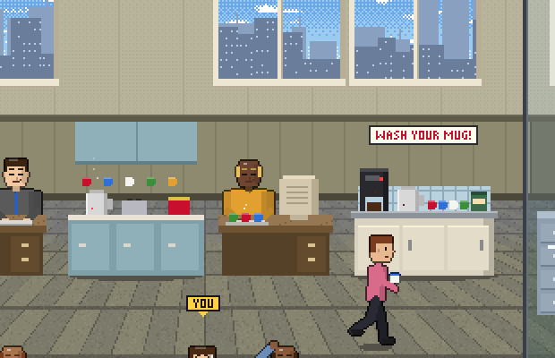
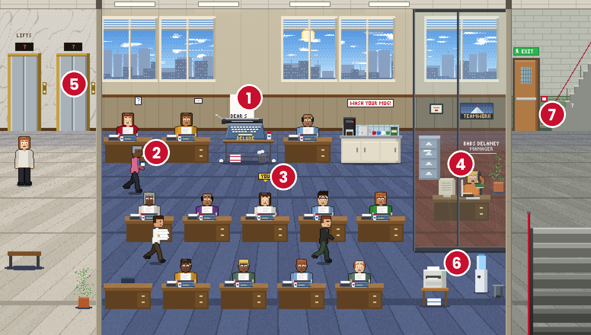
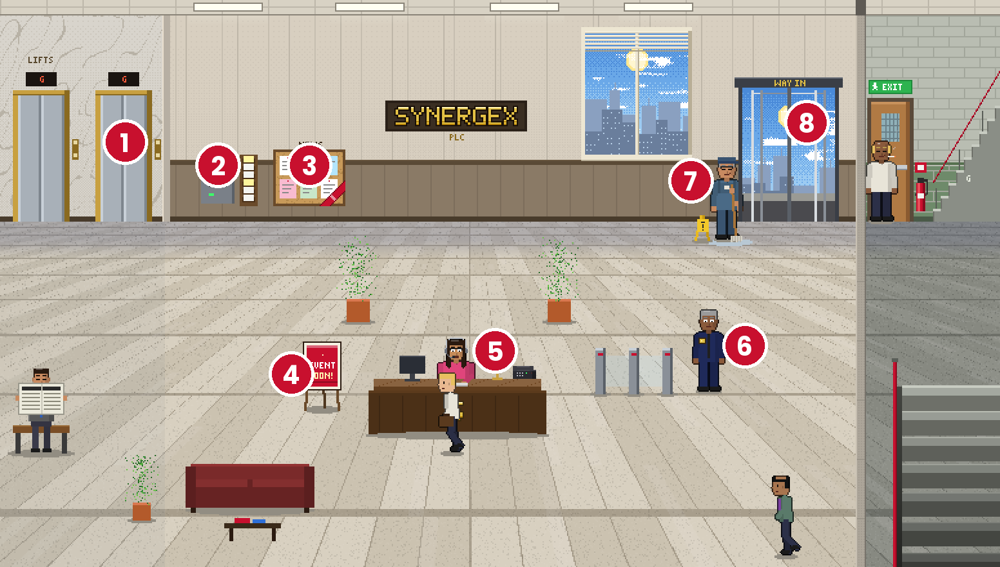
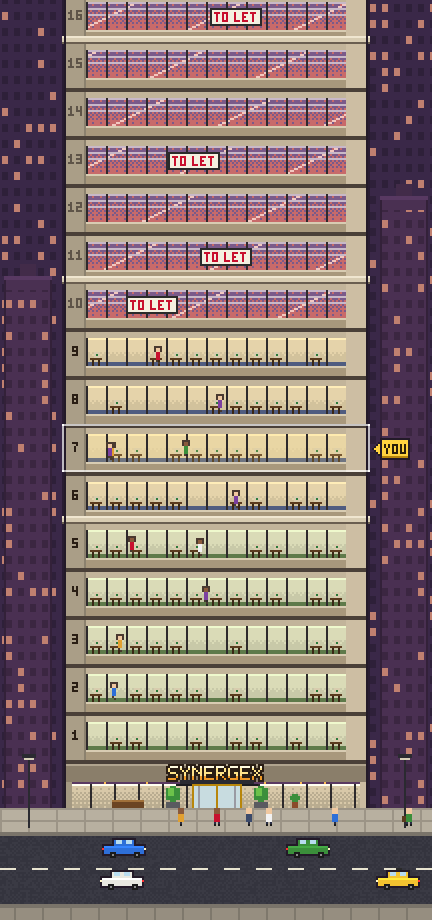
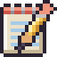
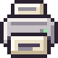
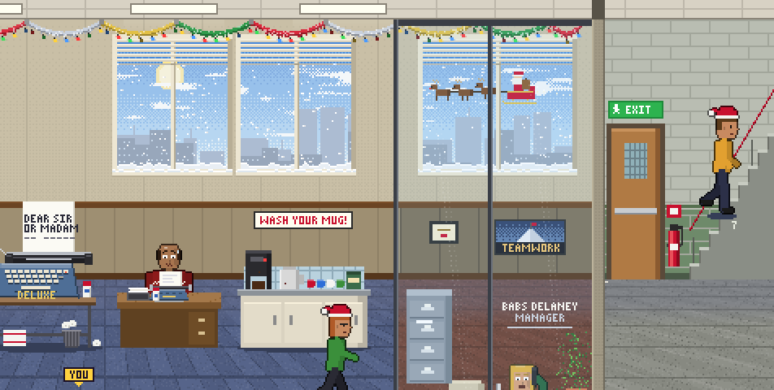

Το Εγχειρίδιο Προσωπικού
1. Τα βασικά
Ξεκινάς ως Παιδί για πρακτική φτιάχνοντας τσάι στην κουζίνα του υπογείου της Synergex plc. Κάθε όροφος του 30ώροφου πύργου έχει τη δική του δουλειά, ένα μηχάνημα ή γραφείο που δουλεύει με χρονόμετρο και πληρώνει κάθε φορά που ολοκληρώνει τον κύκλο του. Στόχος σου είναι να κερδίζεις, να αναβαθμίζεις και να παίρνεις προαγωγή μέχρι τον τελευταίο όροφο.

Η πρώτη σου δουλειά: να φτιάχνεις τσάι. Πάτησέ το για να επιταχύνεις τον γύρο.
- Οι δουλειές παράγουν μόνες τους. Μόλις ξεκινήσει μια δουλειά, συνεχίζει αυτόματα, ακόμα και με κλειστή εφαρμογή.
- Ανέβασε επίπεδο τις δουλειές για να κερδίζεις περισσότερα και να γεμίσεις τα γραφεία με προσωπικό.
- Γέμισε τη μπάρα Κύρους Γραφείου (Kudos) στο πάνω μέρος της οθόνης και πάτησέ την για να ζητήσεις προαγωγή.
- Κάθε προαγωγή πολλαπλασιάζει όλα σου τα κέρδη, και κάθε λίγες προαγωγές ανεβαίνεις όροφο σε μια νέα δουλειά.
Την πρώτη σου μέρα, η Brenda από το HR θα σε ξεναγήσει, ώστε να μαθαίνεις καθώς παίζεις.
2. Μετρητά, Κύρος Γραφείου και χρυσοί συνδετήρες
| Νόμισμα | Σε τι χρησιμεύει |
|---|---|
| Synbux (§) | Κερδίζονται κάθε φορά που ολοκληρώνεται μια δουλειά. Ξόδεψέ τα σε επίπεδα δουλειάς και εργαλεία. |
| Κύρος Γραφείου (Kudos) | Κερδίζονται επίσης με κάθε πληρωμή. Δεν ξοδεύονται ποτέ: γέμισε τη μπάρα για να ξεκλειδώσεις την επόμενη προαγωγή σου. |
| Χρυσοί συνδετήρες | Το premium νόμισμα. Αποκτώνται από προαγωγές, προκλήσεις, την κάρτα παρουσίας, εκδηλώσεις και διαφημίσεις δωρεάν συνδετήρων, ή αγοράζονται στο Κατάστημα. Ξόδεψέ τους σε επιταχύνσεις, άλματα χρόνου και premium εργαλεία. |
3. Κυκλοφορία στο γραφείο
Η κύρια οθόνη δείχνει έναν όροφο του πύργου σε πλάγια όψη. Σύρε αριστερά και δεξιά για να περπατήσεις και κάνε pinch για ζουμ. Σχεδόν τα πάντα πατιούνται.

- Η δουλειά του ορόφου. Πάτησέ την για να τη βιάσεις. Το καρτελάκι στο κάτω μέρος δείχνει το επίπεδό της, τα κέρδη και το κουμπί Αναβάθμιση.
- Το προσωπικό σου. Τα γραφεία γεμίζουν καθώς η δουλειά ανεβαίνει επίπεδο. Πάτησε οποιονδήποτε για μια ατάκα.
- Το γραφείο σου (με ένδειξη ΕΣΥ) βρίσκεται στον όροφο στον οποίο έχεις προαχθεί.
- Το γραφείο του διευθυντή. Πάτησε τον διευθυντή για να ακούσεις τη γνώμη του.
- Τα ασανσέρ. Πάτησε ένα ασανσέρ για τα κουμπιά των ορόφων και ταξίδεψε σε όποιον όροφο έχεις φτάσει.
- Ο εκτυπωτής και ο ψύκτης νερού. Πάτησέ τα για μια έκπληξη.
- Η έξοδος κινδύνου. Έχε το νου σου στις σκάλες: κόσμος πηγαινοέρχεται.
Το κουμπί του χάρτη στην επάνω μπάρα (ο μικρός πύργος) δείχνει όλο το κτίριο: τους ξεκλείδωτους ορόφους, πού είναι το γραφείο σου και ποιος διευθύνει κάθε όροφο.
Τα φώτα ακολουθούν το ρολόι του τηλεφώνου σου: μέρα από τις 06:00, νύχτα από τις 19:00.
4. Το φουαγιέ
Το ισόγειο είναι το φουαγιέ. Πάρε το ασανσέρ για το ΙΣ για να το επισκεφθείς.

- Τα ασανσέρ για επιστροφή επάνω στα γραφεία.
- Το μηχάνημα χτυπήματος κάρτας. Πάτησέ το για να δεις την κάρτα παρουσίας και το σερί σου (δες Χτύπημα κάρτας).
- Ο πίνακας ανακοινώσεων. Όσο τρέχει ένα event, μια κορδέλα EVENT εμφανίζεται στη γωνία: πάτησε τον πίνακα για την εκδήλωση. Τον υπόλοιπο καιρό είναι γεμάτος με τις συνηθισμένες ανακοινώσεις.
- Η αφίσα «Σύντομα event!». Εμφανίζεται πέντε μέρες πριν ξεκινήσει ένα event. Πάτησέ την για να δεις τι έρχεται.
- Η Maxine στη ρεσεψιόν, μόνιμα στο τηλέφωνο.
- Ο Ron από την ασφάλεια. Σου κουνάει το χέρι.
- Ο Stan ο επιστάτης. Πάτησέ τον για τις Πληροφορίες: έκδοση εφαρμογής, νέα και άδειες.
- Η είσοδος. Οι επισκέπτες μπαίνουν από την περιστρεφόμενη πόρτα.
5. Δουλειές και επίπεδα
- Ξεκίνα μια δουλειά με το 1ο επίπεδό της και ανέβασέ την επίπεδο με μετρητά. Κάθε επίπεδο αποφέρει περισσότερα.
- Στα επίπεδα 10, 25, 50, 100 και πέρα, η δουλειά δουλεύει με διπλάσια ταχύτητα.
- Πάτησε μια δουλειά για να τη βιάσεις. Κάθε πάτημα προχωράει την παρτίδα και οι εισπράξεις ανεβαίνουν με χρυσά γράμματα.
- Υπερφόρτωση γραφείου. Πάτα γρήγορα και ο μετρητής Υπερφόρτωσης θα εμφανιστεί αριστερά. Όσο θερμαίνεται, τόσο περισσότερο αξίζει κάθε πάτημα (έως x2,5) και τόσο περισσότερο πανικοβάλλεται το γραφείο. Γέμισέ τον και ο όροφος μπαίνει σε ολική κρίση για λίγα δευτερόλεπτα: απόλυτο χάος και κάθε πάτημα αξίζει x3. Μετά όλοι χρειάζονται λίγο χρόνο να ηρεμήσουν πριν γεμίσει ξανά.
- Στο παράθυρο Εργασίες μπορείς να αγοράσεις 1 επίπεδο, 10, ή MAX (όσα αντέχει η τσέπη σου) με τη μία.
6. Προαγωγές και όροφοι

- Υπάρχουν 150 προαγωγές, πέντε σε καθέναν από τους 30 ορόφους.
- Όταν η μπάρα Κύρους Γραφείου γεμίσει, αναβοσβήνει: πάτησέ την για να ζητήσεις προαγωγή.
- Κάθε προαγωγή πολλαπλασιάζει όλα τα μετρητά (×1,10) και το Κύρος Γραφείου (×1,06).
- Η πρώτη προαγωγή σε κάθε όροφο μεταφέρει το γραφείο σου έναν όροφο πάνω, ξεκλειδώνει τη δουλειά του ορόφου και δίνει χρυσούς συνδετήρες. Ένας νέος διευθυντής σου συστήνεται.
- Η 2η και 4η προαγωγή σε έναν όροφο ξεκλειδώνουν τα εργαλεία του.
- Το ντύσιμό σου γίνεται πιο κομψό όσο ψηλότερα ανεβαίνεις.
Οι όροφοι ξεκινούν από την Υποστήριξη (τσάι, αλληλογραφία, φωτοτυπίες), περνούν από Διοίκηση, IT και Συντήρηση, Διεύθυνση και Στελέχη, μέχρι τους Προεδρικούς ορόφους: συγχωνεύσεις, γκολφ και, στην κορυφή, Διοίκηση της Αυτοκρατορίας.
7. Εργασίες, Εργαλεία, Καριέρα και Κατάστημα
Τα τέσσερα κουμπιά στο κάτω μέρος ανοίγουν παράθυρα πάνω από το γραφείο:
| Button | What's inside |
|---|---|
 Εργασίες | Όλες οι δουλειές σου: επίπεδα, κέρδη, το επόμενο ορόσημο ταχύτητας και μαζική αγορά επιπέδων. |
 Εργαλεία | Μοναδικές αναβαθμίσεις. Κάθε όροφος έχει δύο (μία τριπλασιάζει την πληρωμή της δουλειάς, μία διπλασιάζει την ταχύτητα), συν γενικά εργαλεία για όλη την εταιρεία (ταχύτητα, μισθός, Kudos, χρόνος απουσίας) και premium εργαλεία με συνδετήρες. Αν δεν σου φτάνουν τα μετρητά, το Πληρωμή τώρα βάζει όλα τα μετρητά σου και καλύπτει τα υπόλοιπα με συνδετήρες. |
| Καριέρα | Κάθε βαθμίδα στην εταιρεία, το Κύρος Γραφείου που απαιτεί και οι συνδετήρες που δίνει. |
| Κατάστημα | Σημερινές προσφορές, δωρεάν δώρα (διαφημίσεις), VIP, πακέτα συνδετήρων και επιταχύνσεις: Υπερωρίες (διπλάσια ταχύτητα για 30 λεπτά) και χρονικά άλματα (Μεγάλο μεσημεριανό 1 ώρα, Μισή μέρα 4 ώρες, Αργία 24 ώρες πληρωμής αμέσως). |
8. Όσο λείπεις
- Η ομάδα σου συνεχίζει να δουλεύει όσο η εφαρμογή είναι κλειστή, μέχρι το όριο του χρόνου απουσίας σου: 3 ώρες αρχικά, έως 24 ώρες με εργαλεία, συν 4 έξτρα ώρες για τους VIP.
- Όταν επιστρέψεις, η κάρτα Πίσω στο γραφείο σου δείχνει τι κέρδισες. Πάτησε Συλλογή ή Διπλασιασμός βλέποντας μια σύντομη διαφήμιση (οι VIP διπλασιάζουν αμέσως).
- Όταν τελειώσει ο χρόνος απουσίας, η δουλειά σταματά μέχρι να γυρίσεις. Μια υπενθύμιση σε ειδοποιεί όταν γεμίσει ο δίσκος εισερχομένων σου (ενεργοποίησέ τες στις Ρυθμίσεις).
- Η επιλογή Ανοιχτή οθόνη (στις Ρυθμίσεις) κρατά το τηλέφωνο ξύπνιο όσο το παιχνίδι είναι ανοιχτό, για να παρακολουθείς το γραφείο εν δράσει.
- Πατώντας Πίσω σε ρωτάει αν θέλεις να σχολάσεις. Το σχόλασμα αποθηκεύει την πρόοδό σου (και στο cloud αν έχεις συνδεθεί) πριν σβήσει η οθόνη.
9. Χτύπημα κάρτας καθημερινά
Πάτησε το μηχάνημα κάρτας στο φουαγιέ (εμφανίζεται και στην πρώτη σου επίσκεψη κάθε μέρα) για να πάρεις την ανταμοιβή παρουσίας σου. Η κάρτα κρατά 7 μέρες και οι ανταμοιβές μεγαλώνουν μέσα στην εβδομάδα:
| Ημέρα | Ανταμοιβή |
|---|---|
| 1 | 30 λεπτά μισθού |
| 2 | 30 λεπτά Κύρους Γραφείου |
| 3 | 1 ώρα μισθού |
| 4 | 1 ώρα Κύρους Γραφείου |
| 5 | 2 ώρες μισθού |
| 6 | 2 ώρες Κύρους Γραφείου |
| 7 | 5 χρυσοί συνδετήρες |
- Μπόνους εβδομαδιαίου σερί: κάθε γεμάτη συνεχόμενη εβδομάδα σερί προσθέτει +5% στις ανταμοιβές μετρητών και Kudos, έως +25%. Οι ημέρες 8–14 παίρνουν +5%, οι 15–21 +10% κ.ο.κ. Οι συνδετήρες παραμένουν σταθεροί. Η κάρτα δείχνει το σερί σου και το τρέχον μπόνους.
- Έχασες μια μέρα; Αν έχασες έως 2 μέρες, μπορείς να σώσεις το σερί σου βλέποντας μια διαφήμιση (δωρεάν για VIP), ή να ξεκινήσεις ξανά από την 1η μέρα.
- Μια υπενθύμιση στις 18:30 σε ειδοποιεί αν η σημερινή ανταμοιβή σε περιμένει ακόμα.
10. Προκλήσεις
Υπάρχουν 50 προκλήσεις, που εμφανίζονται μία-μία μέσω του κουμπιού # στα δεξιά της οθόνης. Η μπάρα του γεμίζει καθώς προχωράς και αναβοσβήνει ΔΙΕΚΔΙΚΗΣΗ! όταν ολοκληρωθεί. Κάθε μία δίνει χρυσούς συνδετήρες (από 3 έως 25 συνδετήρες). Σε καθοδηγούν σε πράγματα που ίσως δεν έχεις ανακαλύψει ακόμα: το ασανσέρ, τον χάρτη, τα διαλείμματα για καφέ ή τα εργαλεία. Οι πιο προχωρημένες παίρνουν μέρες ή εβδομάδες.
11. Εκδηλώσεις
- Τα events τρέχουν για ορισμένο διάστημα με έξτρα δουλειές και ενισχύσεις, όπως διπλάσια Kudos ή x1,5 μετρητά.
- Ψάξε για την αφίσα «Σύντομα event!» στο φουαγιέ 5 μέρες πριν αρχίσει, και το κουμπί event στα δεξιά όσο είναι ενεργό.
- Ορισμένα events τρέχουν ένα στάδιο την ημέρα. Ολοκλήρωσε το στάδιο κάθε ημέρας στην ώρα του: ένα στάδιο που χάθηκε κλειδώνει. Μπορείς να το ξεκλειδώσεις μέχρι το τέλος του event με 5 συνδετήρες ή βλέποντας μια διαφήμιση (δωρεάν για VIP). Ολοκλήρωσε όλα τα στάδια για να κερδίσεις ένα τρόπαιο για το γραφείο σου.
- Οι δουλειές των events κοστολογούνται με βάση τα δικά σου τρέχοντα έσοδα, ώστε να είναι δίκαιες σε κάθε βαθμίδα.

Τα Χριστούγεννα όλο το γραφείο στολίζεται: χιόνι, γιρλάντες, φωτάκια, γιορτινά πουλόβερ, δέντρο στο φουαγιέ και ο Άγιος Βασίλης πετάει έξω από τα παράθυρα.
12. Διαλείμματα για καφέ, διαφημίσεις και VIP
- Διάλειμμα για καφέ: δες μια σύντομη διαφήμιση και τα πάντα θα τρέχουν δύο φορές πιο γρήγορα για 15 λεπτά. Τα διαλείμματα συσσωρεύονται έως 4 ώρες.
- Δωρεάν συνδετήρες: δες μια διαφήμιση για 3 χρυσούς συνδετήρες, έως τρεις φορές την ημέρα.
- Οι διαφημίσεις είναι πάντα δική σου επιλογή, έως 10 διαφημίσεις ανταμοιβής την ημέρα. Υπάρχει επίσης μια σύντομη διαφήμιση μετά από κάθε τρίτη προαγωγή.
- Το VIP (εφάπαξ αγορά) αφαιρεί οριστικά τις διαφημίσεις, δίνει άμεσα τις ανταμοιβές, σώζει δωρεάν τα σπασμένα σερί, προσθέτει 4 ώρες χρόνου απουσίας και δίνει ένα χρυσό περιλαίμιο στον υπάλληλό σου.
13. Ρυθμίσεις και cloud
Το γρανάζι επάνω δεξιά ανοίγει τις Ρυθμίσεις:
- Λογαριασμός: συνδέσου στο Google Play Παιχνίδια για να σώσεις την καριέρα σου στο cloud. Αν αλλάξεις τηλέφωνο, συνδέσου εκεί και επίλεξε Φόρτωση από cloud.
- Ήχος: ηχητικά εφέ, θόρυβος φόντου γραφείου και μουσική τίτλων, το καθένα με τη δική του ένταση. Στο κάτω μέρος βρίσκονται η Δόνηση και ο Ήχος πληρωμής δουλειάς (ο ήχος κερμάτων).
- Παιχνίδι: υπενθυμίσεις και ανοιχτή οθόνη.
- Περισσότερα: αυτό το εγχειρίδιο, γλώσσα, επαναφορά αγορών, ρυθμίσεις απορρήτου και πολιτική απορρήτου.
14. Ερωτήσεις
Συνεχίζει το παιχνίδι να κερδίζει όταν είναι κλειστό;
Ναι, μέχρι το όριο του χρόνου απουσίας σου (3 ώρες αρχικά). Αύξησέ τον με εργαλεία ή με το VIP.
Αγόρασα κάτι και δεν εμφανίστηκε.
Άνοιξε Ρυθμίσεις → Επαναφορά αγορών. Οι αγορές συνδέονται με τον λογαριασμό σου στην Google.
Πώς μεταφέρω την πρόοδό μου σε νέο τηλέφωνο;
Στο παλιό τηλέφωνο, συνδέσου στο Google Play Παιχνίδια στις Ρυθμίσεις και πάτησε Αποθήκευση τώρα. Στο νέο τηλέφωνο, συνδέσου με τον ίδιο λογαριασμό και πάτησε Φόρτωση από cloud.
Μπορώ να απενεργοποιήσω τις διαφημίσεις;
Οι διαφημίσεις με ανταμοιβή παίζουν μόνο αν το επιλέξεις. Το VIP αφαιρεί όλες τις διαφημίσεις, συμπεριλαμβανομένης αυτής μετά από κάθε τρίτη προαγωγή.
Κάτι φαίνεται λάθος ή βρήκα κάποιο σφάλμα.
Στείλε email στο dialupstudios.games@gmail.com. Ο Stan στο φουαγιέ θα σου πει σε ποια έκδοση βρίσκεσαι.